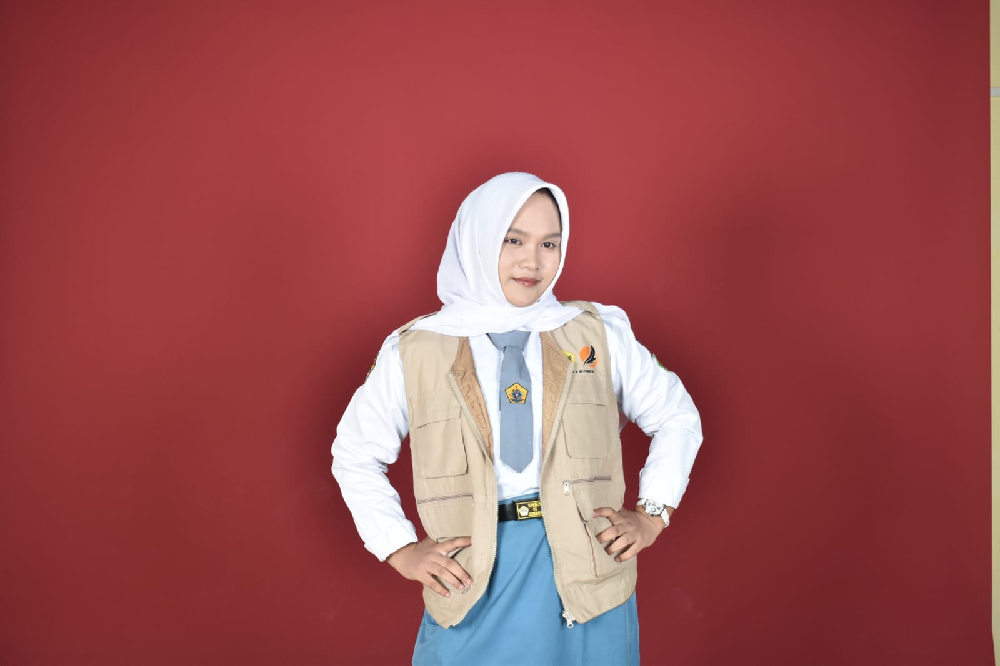

CODING
Mempelajari dan mengembangkan kemampuan di dunia pemrograman dan teknologi.
ENTERING BERLIAN'S WORLD...
WELCOME TO MY FAIRY CANDY GARDEN
Halo, aku
XI RPL 1 ✦ SMKN 8 JEMBER
Menulis mimpi, merangkai cerita, dan menciptakan dunia melalui kata. Dari ruang belajar hingga panggung, setiap pengalaman menjadi langkah baru untuk bertumbuh, berkarya, dan membagikan inspirasi.

BAB PERTAMA
Teknologi adalah salah satu dunia yang ia jelajahi. Cerita Berlian juga tumbuh lewat kata-kata, bahasa, panggung, dan keberanian untuk mencoba.
Ia mampu berkembang di dunia coding tanpa membuat dunia luar terasa asing.
SEBUAH CATATAN TENTANG BERLIANBEKAL DALAM SETIAP PETUALANGAN
Rasa ingin tahu bertemu kreativitas; setiap kemampuan membuka pintu baru.
Mempelajari dan mengembangkan kemampuan di dunia pemrograman dan teknologi.
Mengolah gagasan menjadi tulisan, dengan pengalaman dan prestasi dalam kepenulisan.
Menyampaikan pesan di depan umum dengan percaya diri dan menjalin komunikasi dengan audiens.
Membawakan berbagai acara formal maupun nonformal dengan suasana yang profesional.
Menggabungkan teknologi, komunikasi, dan kreativitas dalam beragam karya.
JEJAK YANG TELAH DITEMPUH
Setiap pencapaian adalah pengingat untuk terus berkarya, belajar, dan melangkah.
CERITA DI LUAR KELAS
Di luar jam sekolah, Berlian aktif sebagai Master of Ceremony dalam berbagai acara formal maupun nonformal. Kemampuan komunikasi, public speaking, dan penguasaan panggung menjadi bagian dari perjalanan yang terus dikembangkan.
LANGKAH DEMI LANGKAH
Sebuah pencapaian dalam perjalanan berbahasa.
Melangkah membawa kebanggaan dan pesona.
Merangkai kata, membagikan gagasan.
Membawa cerita ke berbagai panggung acara.
Terus belajar, bereksperimen, dan berkembang.
SEBUAH KISAH YANG MASIH BERLANJUT
Berlian Qur'aini Hadi
XI RPL 1 ✦ SMKN 8 JEMBER
↑